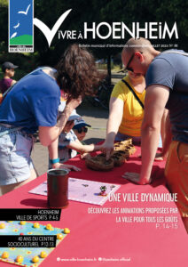
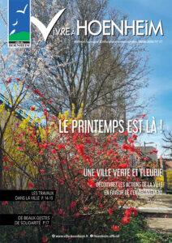
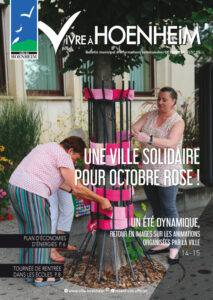

Le mag
Vivre à Hoenheim n°59

Le magazine Vivre à Hoenheim n°59 de septembre 2023, vient de paraître. Dans cette édition découvrez entre autre les actions de la Ville en faveur de l’accueil du jeune enfant, de l’éducation, la tournée de rentrée des écoles, les prochaines animations, les travaux dans la ville, les Challenge André Schneider, l’inauguration de la nouvelle base […]
Vivre à Hoenheim n°58

Le magazine Vivre à Hoenheim n°58 de juillet 2023, vient de paraître. Dans cette édition découvrez entre autre les actions de la Ville en faveur du sport et de la jeunesse, les animations, les travaux dans la ville, l’inauguration et les 40 ans du Centre socioculturel, des projets de nos écoles, un point d’information sur […]
Vivre à Hoenheim N°57

Le magazine Vivre à Hoenheim n°57 de mars 2023, vient de paraître. Dans cette édition découvrez entre autre les actions de la Ville en faveur de l’environnement, les travaux dans la ville, des beaux gestes de solidarité, du patrimoine, le parcours d’une jeune femme pleine de courage, un retour en images sur les événements marquants… […]
Vivre à Hoenheim N°56

Le magazine Vivre à Hoenheim n°56 de décembre 2022, vient de paraître. Dans cette édition découvrez entre autre les animations de Noël, la concertation avec les habitants, la convention partenariale avec l’Eurométropole, le CCAS et la fête des Seniors, une belle histoire avec la création d’un terrain de pétanque à l’Ehpad Les Mésanges, la solidarité […]
Vivre à Hoenheim N°55

Le magazine Vivre à Hoenheim n°55 d’octobre 2022, vient de paraître. Dans cette édition découvrez entre autre la solidarité de toute la ville pour octobre rose, le plan d’économies d’énergies, un retour sur les dernières réunions de quartier, la tournée de rentrée, un retour en images sur les événements marquants… Bonne lecture !